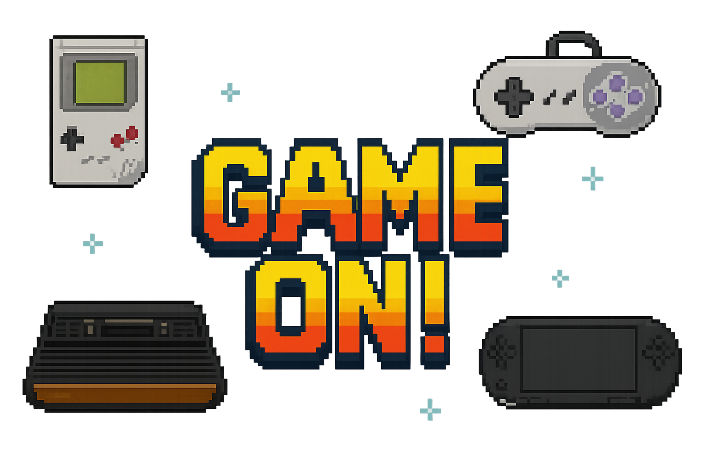

L'origen dels jocs retro es remunta als anys 70 i 80, quan van aparèixer les primeres consoles domèstiques i
màquines recreatives. Jocs com Pong (1972) o Space Invaders (1978) van marcar l'inici de la indústria del
videojoc comercial. Aquestes primeres creacions destacaven per la seva simplicitat gràfica i mecàniques
senzilles, però molt addictives. Amb el temps, sistemes com l’Atari 2600, la Nintendo Entertainment System
(NES) o la Sega Mega Drive van portar els videojocs a les llars i van consolidar gèneres clàssics com les
plataformes, els puzles i els jocs d'acció. Avui dia, els jocs retro són valorats tant per la seva nostàlgia com
per la seva influència en el disseny de videojocs moderns.